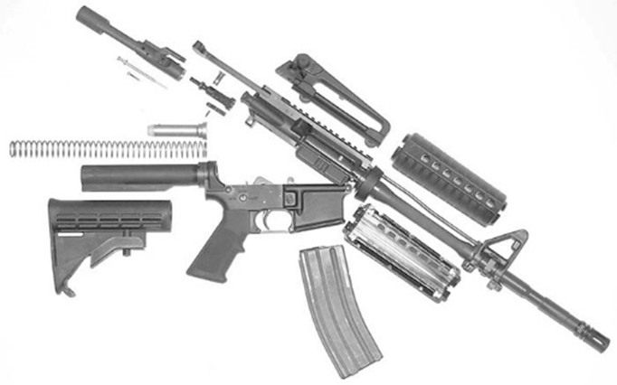
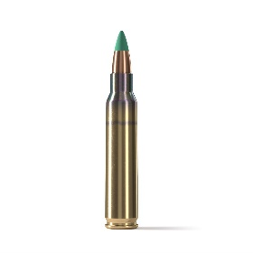

Die M4 hat in ihrer Grundausstattung einen 14,5 Zoll langen Lauf (ungefähr 370 Millimeter) und einen vierfach einstellbaren Teleskopschaft. Die Gesamtlange mit ausgefahrenem Schaft liegt um 840 Millimeter, mit eingezogenem Schaft bei etwa 760 Millimetern je nach Bauvariante. Das Leergewicht des Grundsystems ohne Magazin liegt bei rund 2,88 Kilogramm, wobei Ausrüstung wie Optik, Griff, Lampen oder Handschutz das Gewicht schnell ansteigen lassen kann. Magazinstandard ist ein 30-Schuss-STANAG-Magazin gefüllt mit der 5.56x45 mm NATO Patrone. Die 5.56x45 NATO ist eine standardisierte Intermediate Cartridge und bietet einen Kompromiss zwischen Pistolen und Gewehren, diese Munition ist leichter und hat einen schwächeren Rückstoss. Trotz ihres kleines Kaliber von .22 sollte man die 5.56 oder 223 Remington nicht unterschätzen da sie eine hohe Energie bietet und auch in Panzerbrechenden Varianten wie die M855 kommt.
 Dazu hat die 5.56x45 NATO Munition eine Mündungsgeschwindigkeit zwischen 820-1000m/s und eine Mündungsenergie zwischen 1300 und 1800 Joule. Dazu hat die 5.56x45 eine effektive Reichweite von 300m.
Fazit
Im Feld fällt schnell auf: die M4 ist modular. Führt man eine Kiste mit Zubehör mit, kann man die Waffe anpassen: andere Handschutze, ein Monopod, Red Dot oder Zielfernrohr, Vertical Grip oder Angriffslicht. Für die meisten Soldaten ist sie die Arbeitspferdwaffe: leicht zu tragen, schnell zu handhaben in geschlossenen Raumen und ausreichend genau auf 300 Meter. Kritiker verweisen auf Zuverlässigkeitsprobleme in extremen Umgebungen, wenn schlechte Wartung vorliegt, aber gut gepflegt und mit passenden Komponenten bleibt die M4 ein sehr taugliches System.
Die M4 ist kein perfektes Gewehr, aber sie ist ehrliches Handwerkszeug: wenn man sie pflegt und richtig ausrüstet, erzählt sie keine Geschichten und macht genau das, wofür sie gebaut wurde. Sie ist Mobilität und Feuerkraft in einem kompakten Paket, mit einer langen Historie und einer noch längeren Zukunft, solange die Anforderungen an den modernen Infanteristen Mobilität, Modularität und schnelle Wirksamkeit verlangen.